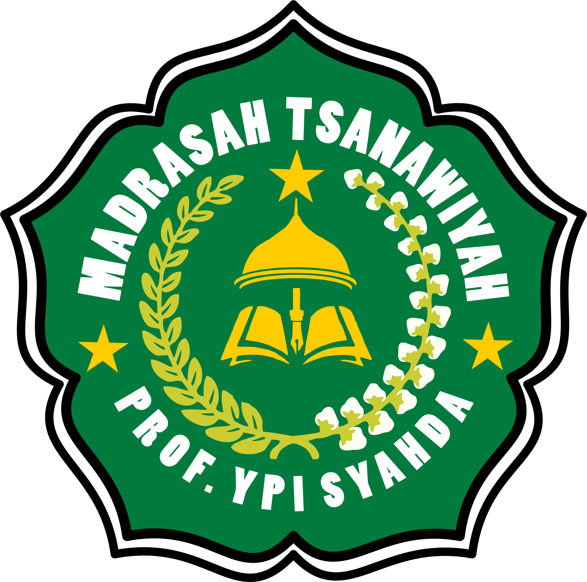

MTs Prof YPI SYAHDA merupakan lembaga pendidikan menengah yang berada di bawah naungan Yayasan Pendidikan Islam SYAHDA. Madrasah ini hadir sebagai bagian dari komitmen yayasan dalam menghadirkan pendidikan yang tidak hanya menekankan pada pencapaian akademik, tetapi juga pembentukan karakter, akhlak mulia, serta nilai-nilai keislaman dalam kehidupan sehari-hari.
Sejak berdiri, MTs Prof YPI SYAHDA terus berupaya menghadirkan lingkungan pendidikan yang kondusif, inspiratif, dan berorientasi pada pengembangan potensi peserta didik secara menyeluruh. Proses pembelajaran dirancang untuk mengintegrasikan ilmu pengetahuan, nilai-nilai agama, serta keterampilan abad ke-21 yang dibutuhkan oleh generasi masa depan.
Dengan dukungan tenaga pendidik yang profesional serta sarana prasarana yang terus dikembangkan, madrasah ini berkomitmen menjadi lembaga pendidikan yang mampu melahirkan generasi yang cerdas, berakhlak, dan siap menghadapi tantangan zaman.
Menjadi madrasah unggulan yang menghasilkan generasi beriman, berilmu, berakhlak mulia, dan berprestasi serta mampu berkontribusi positif bagi masyarakat, bangsa, dan agama.
Menanamkan nilai-nilai keimanan dan ketakwaan sebagai fondasi utama dalam pembentukan karakter peserta didik.
Mendorong peserta didik untuk memiliki kejujuran, tanggung jawab, dan komitmen dalam setiap aktivitas.
Mendukung pengembangan potensi siswa agar mampu meraih prestasi baik di bidang akademik maupun non-akademik.
Menumbuhkan semangat persaudaraan, gotong royong, dan kepedulian sosial dalam kehidupan bermasyarakat.
Setiap kegiatan pembelajaran diarahkan untuk membentuk pribadi muslim yang berakhlak mulia serta memiliki pemahaman agama yang baik.
Didukung oleh guru dan tenaga kependidikan yang kompeten serta berpengalaman di bidangnya.
Madrasah menyediakan lingkungan belajar yang nyaman, aman, dan mendukung perkembangan peserta didik secara optimal.
Berbagai kegiatan ekstrakurikuler diselenggarakan untuk mengembangkan minat, bakat, dan keterampilan siswa.
MTs Prof YPI SYAHDA percaya bahwa pendidikan merupakan investasi terbaik untuk masa depan generasi muda. Oleh karena itu, madrasah berkomitmen untuk terus meningkatkan kualitas pendidikan melalui inovasi pembelajaran, penguatan karakter, serta pengembangan potensi siswa.
Dengan dukungan seluruh elemen madrasah, orang tua, serta masyarakat, MTs Prof YPI SYAHDA diharapkan mampu menjadi lembaga pendidikan yang melahirkan generasi yang tidak hanya cerdas secara intelektual, tetapi juga memiliki akhlak yang baik dan kepedulian sosial yang tinggi.